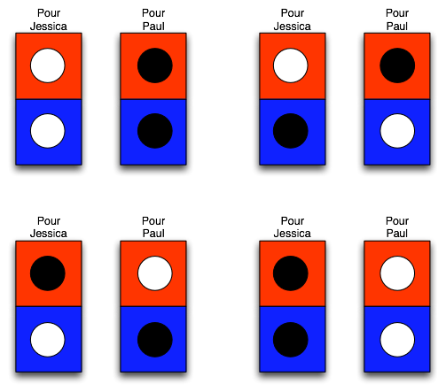

Une présentation ludique des inégalités de Bell
Mon but est de présenter le problème en imaginant une expérience avec des objets de tous les jours et en analysant cette expérience comme on le ferait pour les vraies expérience de physique réalisée en laboratoire. La problématique est évidemment simplifiée mais je ne commet pas de mensonges effrontés! Commençons…
Je dispose de boites avec deux compartiments, un rouge et un bleu, dans chacun desquels je vais mettre un jeton, ou bien noir ou bien blanc. Les compartiments ferment indépendamment et il y a un mécanisme dans la boîte tel que si on en ouvre un, l’autre est définitivement verrouillé. Donc quiconque reçoit la boite fermée ne peut jamais connaître que le contenu d’un seul des compartiments. Je travaille avec deux collaborateurs, Paul et Jessica, qui ne peuvent ni communiquer entre eux, ni voir ce que je fais. Je vais faire plusieurs expériences qui toutes procèdent comme suit. Je prépare deux boîtes et j’en envois une à Paul et l’autre à Jessica. Chacun ouvre le compartiment que je leur ai indiqué à l’avance et note la couleur du jeton. On recommence l’expérience un grand nombre de fois. Finalement ils me rejoignent et comparent leur liste.
Première expérience: Paul ouvrent les compartiments rouges; Jessica fait de même.
Résultats. Avant de me rejoindre, chacun d’eux regarde sa liste et constate qu’il a observé une succession aléatoire de jetons blancs et noirs telle que, en moyenne, un jeton blanc apparaît une fois sur deux (et donc un jeton noir une fois sur deux aussi). Par contre quand ils comparent leur liste, ils découvrent que à chaque fois que l’un a trouvé un jeton blanc, l’autre a trouvé un jeton noir.
Deuxième expérience: idem avec les compartiments bleus cette fois.
Résultats: mêmes constations.
Paul commente: «Bon je crois que ce que Luc a fait est clair. Il a tiré à pile ou face pour mettre des jetons blancs ou noirs dans ma boîte puis il a mis la couleur complémentaire dans ta boîte, Jessica. À quelques variantes près, c’est ce qu’il a fait. Ce mécanisme caché avec une part de hasard classique explique à la fois la distribution aléatoire des couleurs dans un compartiment donné et la corrélation parfaite entre les mêmes compartiments chez moi et chez Jessica».
Jessica est moins définitive: «Nous n’avons pas testé la corrélation entre des compartiments différents chez toi et chez moi. Si tu as raison, on peut néanmoins déduire une propriété non triviale: ton compartiment rouge et mon compartiment bleu, ou vice-versa, contiendront en moyenne une fois sur deux des jetons de même couleur.»
Paul approuve: «Oui, c’est évident en regardant les quatre cas possibles de remplissage des deux boîtes dans le cadre de mon hypothèse.»

Luc entre en scène: “La physique est une science expérimentale. Donc faisons l’expérience !”
Troisième expérience: Paul ouvre le compartiment rouge et Jessica le compartiment bleu.
Ils reviennent me voir et constatent avec surprise que la prédiction de Jessica est fausse. Il y a plus de jetons de même couleur que prévu, i.e. en moyenne plus d’une fois sur deux, et le nombre de tirages est trop grand pour mettre cela sur le dos d’une fluctuation statistique.
Jessica se gratte la tête: «Cherchons ce qui peut être faux dans notre démonstration. Nous avons utilisé la théorie des probabilités: ce ne peut pas être cela. Paul, tu as supposé que le contenu des deux boîtes étaient connu dès leur remplissage, même si Luc nous en cachait certains aspects.»
Paul commente: «Ce qui revient à postuler qu’il existe une réalité indépendante des observateurs que nous sommes.»
Jessica continue: «Tu as aussi supposé que le fait que tu ouvres un compartiment n’a pas d’influence sur le jeton dans celui que j’ouvre, et vice versa.»
Paul: «Oui parce qu’il semblait à priori qu’aucune information ne pouvait se transmettre entre nous. Donc violer cette hypothèse que tu viens de rappeler, me semblait violer le principe que ma mesure ne peut dépendre que de mon environnement immédiat, ce que l’on pourrait appeler le principe de localité.»
Luc intervient à nouveau: «Nous pourrions refaire la dernière expérience avec un timing approprié: Paul ouvre le compartiment rouge au plus tard T secondes après Jessica. En choisissant T beaucoup plus petit que la durée du trajet d’un signal lumineux de Jessica à Paul, la dernière proposition de Jessica peut expliquer le résultat de nos expérience seulement en violant la relativité restreinte.»
Paul ne cache pas sa joie: «Excellent idée ! D’ailleurs c’est un moyen de définir la localité dont je parlais: ma mesure ne peut être affecté que par ce qui est dans le passé de mon cone de lumière, c’est à dire par ce dont je peux recevoir un signal ne se propageant pas strictement plus vite que la lumière.»
Dernière expérience: celle que je viens juste de décrire.
Résultats: exactement les mêmes résultats que la troisième expérience.
Paul reste silencieux tandis que Jessica résume: «Donc on est confronté au choix suivant:
-
ou bien le concept de réalité indépendante de l’observateur n’a pas de sens
-
ou bien il faut admettre la transmission superluminique d’une mystérieuse information entre moi et Paul.
L’une comme l’autre sont difficiles à avaler !»
Luc, très docte: «Mes chers amis, laisser moi maintenant vous enseigner la mécanique quantique …»
Évidemment, dans la réalité, les jetons et les boîtes se comporterait comme prédit par la mécanique classique et l’on observerait bien une fois sur deux en moyenne des jetons de même couleur sur le bleu de Jessica et le rouge de Paul. Mais ici je prétend que ce système simple se comporte en fait comme un système quantique, ce qui a pour conséquence de violer cette loi de probabilité, loi qui est l’équivalent des inégalités de Bell, même si dans mon histoire c’est une égalité! Je vous avais prévenu que l’analogie n’était pas parfaite … Les lecteurs intéressés par une présentation rigoureuse du sujet sont invité à lire mon autre article de blog.